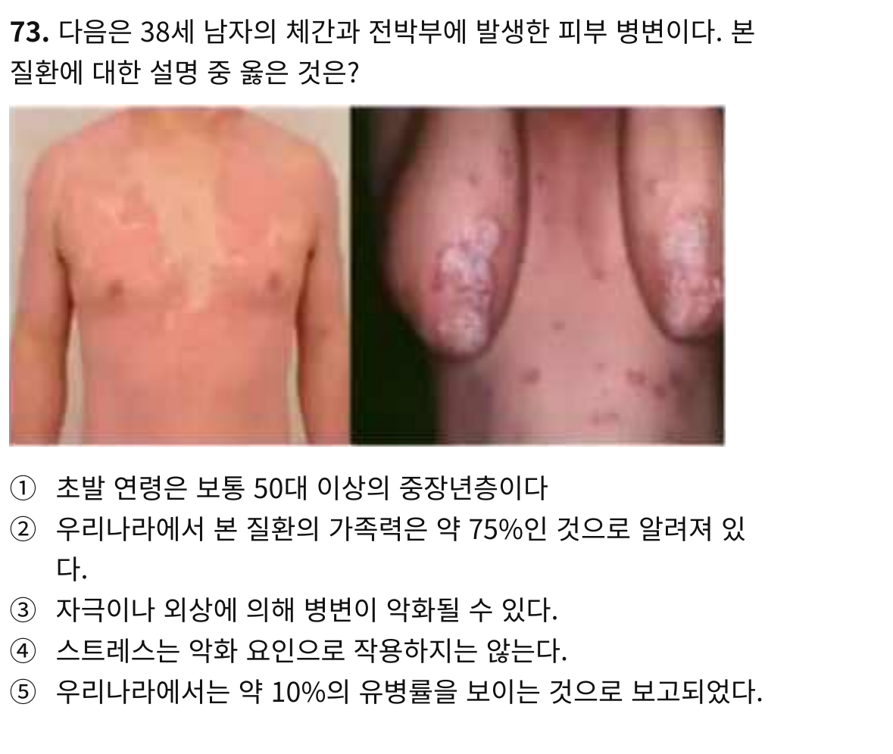
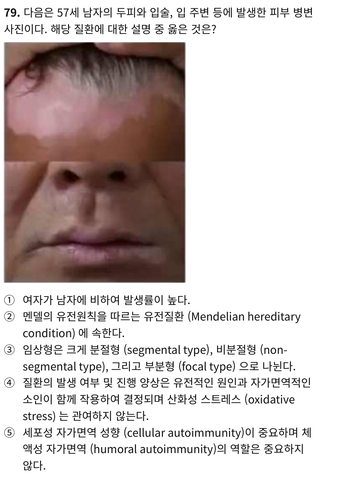

족보정리 — 두경부 및 피부(피부과) · 강의자료만으로 풀 수 있는 족보 문제
분석 족보: 17-21학번 족보(84p, 2019·2021·2022·2023·2025 복원) · 2025 시험지(10p) · 16학번본 족보(5p, 연도 미상) / 대조 강의자료: 강의① 모반·종양(25p) · 강의② 색소이상증·피부노화(34p) · 강의③ 구진비늘질환(42p). 외부 자료·인터넷은 사용하지 않았습니다.
목차 1. 출제 경향 2. 출제 빈도 TOP 3. 풀 수 있는 족보 문제 4. 반복 출제 문제 5. 문제 유형별 6. 자주 틀리는 포인트 7. 제외된 문제 직접/종합 강의자료에 정답 근거가 존재 / 여러 슬라이드 결합추론 강의 근거로 소거·추론NO 강의자료만으로 풀 수 없음판단 보류 🟢 강의자료만으로 풀이 가능 = O
1. 전체 출제 경향
분석 결과 요약 강의자료만으로 풀이 가능 40개 (🟢 O) , 제외·판단 보류 21개. 근거 수준: 직접 25 · 종합 9 · 추론 6. (2025 족보 복원본의 5문항은 2025 시험지와 동일 문항이라 중복 집계하지 않았고 시험지 기준으로 집계)
구분 내용 가장 많이 출제된 단원 강의③ 구진비늘질환 16문항 (건선 중심) > 강의① 12문항 = 강의② 12문항 가장 많이 출제된 개념 건선(역학·악화요인 / 관절염 / 치료) · UVA·UVB 특성 · 암전구증 · 진피 melanocytic lesion — 각 4회 반복 출제 문제 2021→2022→2023→2025 동일 선지 구성이 거의 그대로 반복된 문항군 9개(§4). 족보 해설에도 “왕족/족보 그대로”로 표시 문제 유형 전부 객관식(5지선다 위주). 설명 선지형 다수, 사진 제시형(건선·백반증·편평태선·장미색잔비늘증), 정의형 단답 1문항. 계산·서술형 출제 없음 최근 출제 경향(2025 시험지) 건선 3문항(73–75: 역학·관절염·치료) · UV 2문항(76–77) · 진피 melanocytosis 1(78) · 백반증 1(79, 사진) · 암전구증 1(80) · SCC 고위험 1(81) = 한형진 파트 9문항 2025 새로 등장 UV 해로운 작용(77)·SCC 고위험 인자의 “일광각화증 유래/3cm” 선지 — 이전 연도에는 없던 선지 구성(강의자료로 도출)
출처별 풀이 가능 문항 수 출처 2025 시험지 2023 족보 2022 족보 2021 족보 2019 족보(17학번 복원) 16학번본-A 16학번본-C 16학번본-B 문항 수 9 7 7 9 3 3 1 1
2. 출제 빈도 TOP (개념별)
순위 개념 출제 횟수 최근 출제 중요도 1 ① 건선의 역학·악화요인 4 2025 ★★★★★ 2 ② 건선성 관절염(PsA) 4 2025 ★★★★★ 3 ④ UVA vs UVB 특성 4 2025 ★★★★★ 4 ⑥ 암전구증(precancerous) 목록 4 2025 ★★★★★ 5 ⑦ 표피 vs 진피 melanocytic lesion 4 2025 ★★★★★ 6 ③ 건선 치료 · NBUVB 3 2025 ★★★★★ 7 ⑤ UV 급성·만성 반응, 노화 분류 3 2025 ★★★★★ 8 ⑧ 백반증(Vitiligo) 3 2025 ★★★★★ 9 ⑨ SCC 재발·전이 고위험 3 2025 ★★★★★ 10 ⑩ 편평태선 · Wickham striae 3 2019 ★★★★☆ 11 ⑫ UV의 해로운 영향 2 16학번본(연도 미상) ★★★☆☆ 12 ⑪ Koebner 현상 1 16학번본(연도 미상) ★★☆☆☆ 13 ⑬ 장미색잔비늘증 · herald patch 1 2019 ★★☆☆☆ 14 ⑭ 기저세포암(BCC)의 특징 1 2019 ★★☆☆☆
※ 풀 수 있는 문항에서 추출된 개념이 14개뿐이어서 TOP 30을 채울 수 없습니다(억지로 늘리지 않음). 같은 개념을 다른 방식으로 물은 문제는 별개 출제 사례로 집계. 별점은 학습 우선순위이며 실제 출제 확률이 아닙니다.
3. 강의자료만으로 풀 수 있는 족보 문제 (🟢 O)
① 건선의 역학·악화요인 출제 4회 · ★★★★★ · 강의록 연결
2025 시험지 73번 종합 사진 제시형·설명 선지형
문제 이미지

🟢 강의자료만으로 풀이 가능 = O · 근거 수준: 종합 · 관련 강의: 강의③ p.6 · 강의③ p.7 · 강의③ p.11
정답 ③
해설(강의자료 근거) 사진=강의③ p.11 건선 임상 사진과 동일. p.6: 초발 10~30대(①✕), 가족력 한국 25%(②✕), 유병률 한국 약 1%(⑤✕). p.7: 악화요인 = 피부외상·감염·기후·건조·스트레스·약물 → ③○, ④✕.
비고 정답 출처: 2025 족보 복원본(‘건선에 관한 족보 문제와 동일’)과 강의 근거 일치.
2023 족보 82번 종합 사진 제시형·설명 선지형
문제 원문 53세 남성의 피부 질환(사진). 이 질환에 대해 옳은 것은?
① 초발연령은 50대로 중장년층이다 ② 가족력의 영향은 75%이다 ③ 외상이나 자극으로 인해 악화된다 ④ 스트레스는 악화요인이 아니다 ⑤ 유병률 10%이다 🟢 강의자료만으로 풀이 가능 = O · 근거 수준: 종합 · 관련 강의: 강의③ p.6 · 강의③ p.7
정답 ③
해설(강의자료 근거) 2025-73번과 동일 논리(p.6, p.7).
2022 족보 72번 종합 사진 제시형·설명 선지형
문제 원문 53세 남성의 피부 질환(판상건선 사진). 이 질병에 대해 옳은 것은?
① 초발연령은 50대이며, 남자에서 흔하다 ② 가족력 영향이 75% 정도이다 ③ 악화인자로는 추위, 외상, 약물, 기후, Group B Streptococcus 감염 등이 있다 ④ 스트레스는 악화인자 아니다 ⑤ 유병률 10% 정도이다 🟢 강의자료만으로 풀이 가능 = O · 근거 수준: 종합 · 관련 강의: 강의③ p.6 · 강의③ p.7
정답 ③
해설(강의자료 근거) p.7 악화요인(외상·감염[β-streptococcal]·기후·약물) → ③. 나머지는 p.6 수치와 상충. ※ 선지 ③의 ‘Group B’·‘추위’ 표현은 강의록에 그대로는 없음([확인 필요]); 다른 선지가 모두 반박되어 ③ 확정.
2021 족보 70번 종합 사진 제시형·설명 선지형
문제 원문 53세 남성의 피부 질환(판상건선 사진). 이 질병에 대해 옳은 것은?
① 초발연령은 50대이며, 남자에서 흔하다 ② 가족력 영향이 75% 정도이다 ③ 악화인자로는 추위, 외상, 약물, 기후, Group B Streptococcus 감염 등이 있다 ④ 스트레스는 악화인자 아니다 ⑤ 유병률 10% 정도이다 🟢 강의자료만으로 풀이 가능 = O · 근거 수준: 종합 · 관련 강의: 강의③ p.6 · 강의③ p.7
정답 ③
해설(강의자료 근거) 2022-72번과 동일 선지.
② 건선성 관절염(PsA) 출제 4회 · ★★★★★ · 강의록 연결
2025 시험지 74번 직접 설명 선지형
문제 원문 건선성 관절염(PsA)에 대한 설명으로 옳은 것은?
① 20대에 가장 호발한다 ② 성별에 따른 유병률의 차이는 없다 ③ 전체 피부 건선 환자 중 약 70% 이상에서 건선관절염이 동반된다 ④ 전체 인구로 보았을 때 유병률은 약 5%이다 ⑤ 손톱 건선과 건선 관절염이 동반하는 경우가 거의 없다 🟢 강의자료만으로 풀이 가능 = O · 근거 수준: 직접 · 관련 강의: 강의③ p.18
정답 ②
해설(강의자료 근거) p.18: peak 35–40세(①✕), No gender difference(②○), 건선의 6–42%(③✕), 일반인구 0.05–1%(④✕). ⑤는 강의록에 근거 없으나 ②가 직접 확인되어 단일 정답 확정.
2023 족보 42번 직접 설명 선지형
문제 원문 건선성 관절염에 대해 옳은 것은?
① 20대에 많다 ② 성별차이 없다 ③ 전체 건선 환자 70퍼센트에서 동반 ④ 전체 인구 유병률 5퍼 ⑤ 손톱건선은 동반되지 않는다 🟢 강의자료만으로 풀이 가능 = O · 근거 수준: 직접 · 관련 강의: 강의③ p.18
정답 ②
해설(강의자료 근거) 2025-74번과 동일.
2022 족보 79번 직접 설명 선지형
문제 원문 건선성 관절염에 대해 옳은 것은?
① 30-40대에 호발 ② 남성에 호발 ③ 전체 건선 환자의 약 70%에서 동반 ④ 전체 인구 유병률은 약 5% ⑤ 손톱 건선에서는 거의 동반되지 않는다 🟢 강의자료만으로 풀이 가능 = O · 근거 수준: 직접 · 관련 강의: 강의③ p.18
정답 ①
해설(강의자료 근거) p.18 peak 35–40세 → ①○, 성별차 없음 → ②✕, 6–42% → ③✕.
2021 족보 71번 직접 설명 선지형
문제 원문 건선성 관절염에 대해 옳은 것은?
① 30-40대에 호발 ② 남성에 호발 ③ 전체 건선 환자의 약 70%에서 동반 ④ 전체 인구 유병률은 약 5% ⑤ 손톱 건선에서는 거의 동반되지 않는다 🟢 강의자료만으로 풀이 가능 = O · 근거 수준: 직접 · 관련 강의: 강의③ p.18
정답 ①
해설(강의자료 근거) 2022-79번과 동일.
③ 건선 치료 · NBUVB 출제 3회 · ★★★★★ · 강의록 연결
2025 시험지 75번 추론 설명 선지형
문제 원문 건선(psoriasis)의 치료에 대한 설명으로 맞는 것은?
① 1차 치료제 중 외용제에는 retinoids가 많이 사용된다 ② 2차 치료제 중 외용제로는 대표적으로 비타민 D3 유도체(calcipotriol 등)를 들 수 있다 ③ 자외선을 이용한 광선치료 중에서는 주로 narrow-band UVB가 많이 이용된다 ④ methotrexate, cyclosporin, retinoids는 비교적 부작용이 없어 중등도 이상의 건선에서 사용하기 편한 약제들이다 ⑤ 치료 종류를 주기적으로 바꾸는 순환 치료는 건선에서 시행할 필요가 없다 🟢 강의자료만으로 풀이 가능 = O · 근거 수준: 추론 · 관련 강의: 강의③ p.21 · 강의③ p.22 · 강의③ p.23 · 강의② p.17–18
정답 ③
해설(강의자료 근거) p.21: 1차 외용 = emollient·glucocorticoid·vitamin D3 analog(retinoid 없음 → ①✕), 2차 외용 = dithranol·tazarotene·tar(vit D3는 1차 → ②✕). p.22 phototherapy에 PUVA·NBUVB, 강의② p.17–18에서 NBUVB(311nm)의 장점 상세 → ③이 강의 내용과 부합. ④·⑤는 강의자료에 언급 없어 직접 반박은 불가하나 ③이 강의에서 확인되는 유일한 선지.
핵심 개념 ③ 건선 치료 · NBUVB →
강의록 연결 비고 [추론] ④·⑤ 반박 불가. 정답 출처: 2023 족보 84번(동일 문항, 정답 3).
2023 족보 84번 추론 설명 선지형
문제 원문 건선의 치료에 관한 설명 중 옳은 것은?
① 1차치료 외용제로 retinoid가 사용된다 ② 2차치료 외용제로 vit. D가 사용된다 ③ 광선치료는 주로 NBUVB가 이용된다 ④ cyclosporin, MTX 등은 부작용이 적어 편하게 사용할 수 있다 ⑤ 치료를 주기적으로 바꾸는 순환치료는 건선 치료에서 할 필요가 없다 🟢 강의자료만으로 풀이 가능 = O · 근거 수준: 추론 · 관련 강의: 강의③ p.21–23 · 강의② p.17–18
정답 ③
해설(강의자료 근거) 2025-75번과 동일.
핵심 개념 ③ 건선 치료 · NBUVB →
강의록 연결 비고 [추론] 동일 사유.
2021 족보 72번 추론 설명 선지형
문제 원문 건선의 치료에 대하여 옳은 것은?
① 1차치료 외용제로 retinoid가 사용된다 ② 2차치료 외용제로 vit D3 analogue가 사용된다 ③ 광선치료로는 NBUVB가 자주 이용된다 ④ 면역조절제가 부작용이 적어 자주 이용된다 🟢 강의자료만으로 풀이 가능 = O · 근거 수준: 추론 · 관련 강의: 강의③ p.21–23 · 강의② p.17–18
정답 ③
해설(강의자료 근거) p.21 근거로 ①②✕, p.22·강의② p.17–18로 ③○. ④는 강의 근거 없음.
핵심 개념 ③ 건선 치료 · NBUVB →
강의록 연결 비고 [추론] ④ 반박 불가.
④ UVA vs UVB 특성 출제 4회 · ★★★★★ · 강의록 연결
2025 시험지 76번 직접 설명 선지형
문제 원문 자외선(UV)에 대한 설명으로 옳은 것은?
① UV-A는 멜라닌 색소를 생산하는 작용(melanogenic action)을 가진다 ② UV-A는 광노화(photoaging)에는 큰 역할을 하지 않는 것으로 보인다 ③ UV-B는 유리창으로 차단할 수 없다 ④ UV-B는 피부 세포의 DNA 손상을 일으키지는 않는다 ⑤ UV-A는 UV-B보다 1,000배 정도 양이 적지만 발산하는 광자(photons)의 에너지가 1,000배 가량 높다 🟢 강의자료만으로 풀이 가능 = O · 근거 수준: 직접 · 관련 강의: 강의② p.4 · 강의② p.5 · 강의② p.6
정답 ①
해설(강의자료 근거) p.4: UVA = melanogenic action, 광노화에 더 큰 역할(①○, ②✕). p.5: UVB는 유리창에 차단, 직접 DNA 손상(③④✕). p.6: UVB 광자가 UVA보다 약 1000배 더 energetic(⑤는 UVA/UVB가 뒤바뀜 ✕).
핵심 개념 ④ UVA vs UVB 특성 →
강의록 연결 2023 족보 85번 직접 설명 선지형
문제 원문 UV가 일으키는 작용으로 옳은 것은?
① UVA는 멜라닌 색소를 생성하는 작용(melanogenic action)을 한다 ② UVA는 광노화(photoaging)에 영향을 미치지는 않는다 ③ UVB는 창문으로 차단할 수 없다 ④ UVB는 피부세포의 DNA를 파괴하는데 영향을 미치지는 않는다 ⑤ UVA는 UVB보다 1000배 정도 들어오는 양이 적고 광자가 방출하는 에너지가 1000배 많다 🟢 강의자료만으로 풀이 가능 = O · 근거 수준: 직접 · 관련 강의: 강의② p.4–6
정답 ①
해설(강의자료 근거) 2025-76번과 동일.
핵심 개념 ④ UVA vs UVB 특성 →
강의록 연결 2022 족보 81번 직접 설명 선지형
문제 원문 다음 중 옳은 것을 고르시오.
① UVA는 melanogenic 작용을 한다 ② UVB는 유리창을 뚫는다 ③ UVA는 UVB의 1000배 힘을 가지고 있어 UVB의 1/1000으로도 같은 홍반반응을 일으킬 수 있다 ④ UVB는 DNA 손상을 하지 않는다 ⑤ UVA는 광노화와 관련이 없다 🟢 강의자료만으로 풀이 가능 = O · 근거 수준: 직접 · 관련 강의: 강의② p.4–6
정답 ①
해설(강의자료 근거) p.4·5·6 (③은 UVA/UVB 뒤바뀜 — 같은 홍반에 필요한 양은 UVB가 UVA의 1/1000).
핵심 개념 ④ UVA vs UVB 특성 →
강의록 연결 2021 족보 25번 직접 설명 선지형
문제 원문 다음 중 옳은 것을 고르시오.
① UVA는 melanogenic 작용을 한다 ② UVB는 유리창을 뚫는다 ③ UVA는 UVB의 1000배의 힘을 가지고 있어 UVB의 1/1000으로도 같은 홍반반응을 일으킬 수 있다 ④ UVB는 DNA 손상을 하지 않는다 ⑤ UVA는 광노화와 연관이 없다 🟢 강의자료만으로 풀이 가능 = O · 근거 수준: 직접 · 관련 강의: 강의② p.4–6
정답 ①
해설(강의자료 근거) 2022-81번과 동일.
핵심 개념 ④ UVA vs UVB 특성 →
강의록 연결 ⑤ UV 급성·만성 반응, 노화 분류 출제 3회 · ★★★★★ · 강의록 연결
2023 족보 86번 직접 설명 선지형
문제 원문 다음 중 UV의 작용 중 옳은 것은?
① UV 자외선의 급성반응은 홍반, tanning이다 ② UV 자외선은 DNA 손상하지 않는다 ③ UVB는 melanogenic action한다 ④ UVB는 창문으로 차단되지 않는다 ⑤ UV 자외선은 면역에 작용하지 않는다 🟢 강의자료만으로 풀이 가능 = O · 근거 수준: 직접 · 관련 강의: 강의② p.11 · 강의② p.4–5 · 강의② p.10
정답 ①
해설(강의자료 근거) p.11 급성 = Erythema·sunburn, Pigmentation(Tanning)(①○). DNA 직접·간접 손상(②✕, p.10), melanogenic은 UVA(③✕, p.4), UVB는 유리창 차단(④✕, p.5), UV는 immunosuppression(⑤✕, p.10·11).
핵심 개념 ⑤ UV 급성·만성 반응, 노화 분류 →
강의록 연결 2021 족보 74번 직접 설명 선지형
문제 원문 다음 중 옳은 것을 고르세요.
① Direct DNA, indirect DNA damage에 자외선이 관여한다 ② Sunburn은 자외선에 대한 만성 반응이다 ③ 피부 두께 증가는 자외선에 대한 급성 반응이다 ④ [판독 불가 — 족보 원문 “자외선은 subcutaneous immune 어쩌고..” 소실] ⑤ 광노화는 내인성 노화이다 🟢 강의자료만으로 풀이 가능 = O · 근거 수준: 직접 · 관련 강의: 강의② p.10 · 강의② p.11 · 강의② p.12
정답 ①
해설(강의자료 근거) p.10 UVB=Direct DNA damage, UVA=Indirect(①○). p.11 sunburn은 급성·thickening은 만성(②③✕). p.12 광노화는 외인성 노화(⑤✕).
핵심 개념 ⑤ UV 급성·만성 반응, 노화 분류 →
강의록 연결 비고 ④ 원문 소실 → [판독 불가]. 나머지 선지로 정답 확정.
2025 시험지 77번 종합 설명 선지형
문제 원문 자외선(UV)의 해로운 작용에 대한 설명으로 옳은 것은?
① UV-A는 DNA 손상 등 피부 각질세포에 대한 독성은 나타나지 않는다 ② 홍반과 색소형성(tanning)은 UV에 대한 피부의 급성 반응(chronic response)에 속한다 ③ 피부의 두께가 증가하는 것은 UV에 대한 피부의 급성 반응(acute response)에 속한다 ④ UV는 피부 면역체계(cutaneous immune system)의 조절 이상(dysregulation)과는 관련이 없다 ⑤ UV에 의한 피부의 노화는 내인 노화(intrinsic aging)에 속한다 🟢 강의자료만으로 풀이 가능 = O · 근거 수준: 종합 · 관련 강의: 강의② p.4 · 강의② p.10 · 강의② p.11 · 강의② p.12
정답 ②
해설(강의자료 근거) p.4·10: UVA는 간접(ROS)·chromophore 통한 DNA 손상(①✕). p.11: 두께 증가(Thickening)는 만성(③✕), immune regulation(④✕), p.12 광노화=외인성(⑤✕) → 남는 ②(홍반·tanning = 급성, p.11).
핵심 개념 ⑤ UV 급성·만성 반응, 노화 분류 →
강의록 연결 비고 [확인 필요] 시험지 ②의 괄호 영문 표기가 “chronic response”로 되어 있음(오기로 보임). 족보에 정답 기재 없음 — 강의자료 기반 도출값.
⑥ 암전구증(precancerous) 목록 출제 4회 · ★★★★★ · 강의록 연결
2025 시험지 80번 직접 설명 선지형
문제 원문 피부의 전구암증(precancerous conditions)에 속하지 않는 것은?
① actinic keratosis (AK, 광선각화증) ② 보웬병 (Bowen disease) ③ erythroplasia de Queyrat (EQ, 케이라 홍색비후증) ④ leukoplakia (백반증) ⑤ incontinentia pigmenti (IP, 색소실조증) 🟢 강의자료만으로 풀이 가능 = O · 근거 수준: 직접 · 관련 강의: 강의① p.4
정답 ⑤
해설(강의자료 근거) p.4 전구암증 목록: 광선각화증·비소각화증·백판증·피각·선천성 거대 색소성모반·만성방사선피부염·색소건피증·Bowen병·Queyrat 홍색비후증 → ①~④는 목록에 있음, IP는 없음.
핵심 개념 ⑥ 암전구증(precancerous) 목록 →
강의록 연결 2023 족보 37번 직접 설명 선지형
문제 원문 다음 중 암전구증으로 옳지 않은 것은?
① 광선각화증 ② 백판증 ③ 홍색비후증 ④ 색소성 건피증 ⑤ 색소감소증 IP 🟢 강의자료만으로 풀이 가능 = O · 근거 수준: 직접 · 관련 강의: 강의① p.4
정답 ⑤
해설(강의자료 근거) 2025-80번과 동일 구조.
핵심 개념 ⑥ 암전구증(precancerous) 목록 →
강의록 연결 2022 족보 75번 직접 설명 선지형
문제 원문 다음 중 피부 전암병변으로 옳지 않은 것은?
① 광선각화증 ② 백판증 ③ 홍색비후증 ④ 색소성 건피증 ⑤ 색소감소증 IP 🟢 강의자료만으로 풀이 가능 = O · 근거 수준: 직접 · 관련 강의: 강의① p.4
정답 ⑤
해설(강의자료 근거) 동일.
핵심 개념 ⑥ 암전구증(precancerous) 목록 →
강의록 연결 2021 족보 68번 직접 설명 선지형
문제 원문 다음 중 암전구증으로 옳지 않은 것은?
① 광선각화증 ② 백판증 ③ 홍색비후증 ④ 색소성 건피증 ⑤ 색소감소증 IP 🟢 강의자료만으로 풀이 가능 = O · 근거 수준: 직접 · 관련 강의: 강의① p.4
정답 ⑤
해설(강의자료 근거) 동일(원문 번호 표기 불규칙).
핵심 개념 ⑥ 암전구증(precancerous) 목록 →
강의록 연결 ⑦ 표피 vs 진피 melanocytic lesion 출제 4회 · ★★★★★ · 강의록 연결
2025 시험지 78번 직접 설명 선지형
문제 원문 다음 중 진피 멜라닌색소증(dermal melanocytosis)에 해당되는 질환은?
① lentigo (흑자) ② Café-au-lait macule (CALM, 밀크커피 반점) ③ Mongolian spot (몽고 반점) ④ Becker's nevus (베커 모반) ⑤ nevus spilus (편평 모반) 🟢 강의자료만으로 풀이 가능 = O · 근거 수준: 직접 · 관련 강의: 강의① p.19 · 강의① p.20
정답 ③
해설(강의자료 근거) p.20 Dermal melanocytic lesion = Ota·Mongolian spot·Ito·…; p.19 Epidermal = Freckle·Lentigo·Nevus spilus·Becker·CALM.
핵심 개념 ⑦ 표피 vs 진피 melanocytic lesion →
강의록 연결 2023 족보 90번 직접 설명 선지형
문제 원문 진피 악성 흑색종의 임상양상으로 옳은 것은? (원문 표기)
① lentigo ② nevus spilus ③ Becker's nevus ④ Mongolian spot ⑤ Café au lait macule 🟢 강의자료만으로 풀이 가능 = O · 근거 수준: 직접 · 관련 강의: 강의① p.19–20
정답 ④
해설(강의자료 근거) 동일. ※ 발문의 ‘악성 흑색종’은 원문 표기이며 강의 개념은 dermal melanocytic lesion.
핵심 개념 ⑦ 표피 vs 진피 melanocytic lesion →
강의록 연결 2022 족보 77번 종합 설명 선지형
문제 원문 다음 중 악성 흑색종의 유래로 다른 것은? (원문 표기)
① lentigo ② cafe au lait macule ③ mongolian spot ④ becker's nevus ⑤ nevus spilus 🟢 강의자료만으로 풀이 가능 = O · 근거 수준: 종합 · 관련 강의: 강의① p.19–20
정답 ③
해설(강의자료 근거) 네 개는 epidermal, Mongolian spot만 dermal.
핵심 개념 ⑦ 표피 vs 진피 melanocytic lesion →
강의록 연결 2021 족보 69번 종합 설명 선지형
문제 원문 epidermis 유래 악성흑색종의 4가지 임상양상이 아닌 것은? (원문 표기)
① freckle ② cafe au lait macule ③ mongolian spot ④ lentigo ⑤ nevus spilus 🟢 강의자료만으로 풀이 가능 = O · 근거 수준: 종합 · 관련 강의: 강의① p.19–20
정답 ③
해설(강의자료 근거) epidermal 목록(freckle·lentigo·nevus spilus·Becker·CALM) 중 Mongolian spot은 없음.
핵심 개념 ⑦ 표피 vs 진피 melanocytic lesion →
강의록 연결 ⑧ 백반증(Vitiligo) 출제 3회 · ★★★★★ · 강의록 연결
2025 시험지 79번 직접 사진 제시형·설명 선지형
문제 이미지

🟢 강의자료만으로 풀이 가능 = O · 근거 수준: 직접 · 관련 강의: 강의② p.22 · 강의② p.23 · 강의② p.24 · 강의② p.26–27
정답 ③
해설(강의자료 근거) 사진=강의② p.24(non-segmental acrofacial). p.22: 성별 차이 없음(①✕), 유전질환은 아니나 유전소인(②✕). p.23: Segmental/Non-segmental/Focal(③○). p.26–27: oxidative stress 관여(④✕), Cellular and humoral autoimmunity(⑤✕).
핵심 개념 ⑧ 백반증(Vitiligo) →
강의록 연결 비고 정답 출처: 2022 족보 83번(동일 계열, 정답=임상형 선지)과 강의 근거 일치. 공식 정답 미확인.
2022 족보 83번 직접 사진 제시형·설명 선지형
문제 원문 사진의 질병과 관련하여 옳은 것은?
① 여자가 남자보다 더 많이 걸린다 ② 멘델의 유전 법칙을 따르는 유전 질환에 해당한다 ③ 자가면역 질환과 관련이 없다 ④ clinical type으로 segmental, Non segmental, Focal Type이 존재한다 ⑤ cellular autoimmunity는 중요하나 humoral immunity는 관여하지 않는다 🟢 강의자료만으로 풀이 가능 = O · 근거 수준: 직접 · 관련 강의: 강의② p.22–23 · 강의② p.26–28
정답 ④
해설(강의자료 근거) p.22–23, p.26–28 (자가면역 동반질환 p.28로 ③✕).
핵심 개념 ⑧ 백반증(Vitiligo) →
강의록 연결 2021 족보 75번 직접 사진 제시형·설명 선지형
문제 원문 사진의 질병과 관련해 옳은 것은?
① 여자가 남자보다 더 많이 걸린다 ② 멘델 유전법칙을 따른다 ③ clinical type로 segmental, nonsegmental, focal이 있다 ④ [판독 불가 — 족보 원문 소실] ⑤ cellular autoimmunity는 중요하나 humoral autoimmunity는 그렇지 않다 🟢 강의자료만으로 풀이 가능 = O · 근거 수준: 직접 · 관련 강의: 강의② p.22–23 · 강의② p.27
정답 ③
해설(강의자료 근거) 동일. ④ 원문 소실 → [판독 불가]; 족보 해설(‘둘 다 중요’)과 p.27 일치.
핵심 개념 ⑧ 백반증(Vitiligo) →
강의록 연결 ⑨ SCC 재발·전이 고위험 출제 3회 · ★★★★★ · 강의록 연결
2025 시험지 81번 종합 설명 선지형
문제 원문 피부 편평세포암(SCC)의 재발과 전이에 관련된 고위험 인자 중 맞는 것은?
① 몸통에 발생한 병변 ② 3cm의 크기 ③ 조직 검사상 높은 분화도(well-differentiated lesion) ④ 일광 각화증(actinic keratosis)로부터 발생 ⑤ 2mm의 침윤 깊이(depth of infiltration) 🟢 강의자료만으로 풀이 가능 = O · 근거 수준: 종합 · 관련 강의: 강의① p.15
정답 ②
해설(강의자료 근거) p.15 고위험: 부위 입술·귀(①✕), 크기 2cm 이상(②○), 침윤 4mm 이상(⑤✕), 불완전 분화(③✕), 발생 요인은 흉터·만성궤양·만성골수염·자외선조사(④ 목록에 없음).
핵심 개념 ⑨ SCC 재발·전이 고위험 →
강의록 연결 비고 [확인 필요] 족보에 2025 정답 기재 없음 — 강의자료 기반 도출값.
2022 족보 76번 직접 설명 선지형
문제 원문 다음 중 편평세포암 재발과 전이 고위험인 것은?
① 다리에 발생 ② 크기 1cm ③ 침윤 깊이 2mm ④ 재발 병변 🟢 강의자료만으로 풀이 가능 = O · 근거 수준: 직접 · 관련 강의: 강의① p.15
정답 ④
해설(강의자료 근거) p.15 ⑥ 재발 병변.
핵심 개념 ⑨ SCC 재발·전이 고위험 →
강의록 연결 2021 족보 67번 직접 설명 선지형
문제 원문 다음 중 편평세포암 재발과 전이 고위험인 것은?
① 다리에 발생 ② 크기 1cm ③ 침윤 깊이 2mm ④ 재발 병변 ⑤ [판독 불가 — 5번 선지 소실] 🟢 강의자료만으로 풀이 가능 = O · 근거 수준: 직접 · 관련 강의: 강의① p.15
정답 ④
해설(강의자료 근거) 동일.
핵심 개념 ⑨ SCC 재발·전이 고위험 →
강의록 연결 ⑩ 편평태선 · Wickham striae 출제 3회 · ★★★★☆ · 강의록 연결
2019 족보 70번 직접 설명 선지형
문제 원문 편평태선(lichen planus)의 특징적인 양상으로 회백색의 띠가 보이는 것이 무엇인가?
① auspitz sign ② christmas tree pattern ③ wickham striae ④ geographical tongue ⑤ herald patch 🟢 강의자료만으로 풀이 가능 = O · 근거 수준: 직접 · 관련 강의: 강의③ p.37
정답 ③
해설(강의자료 근거) p.37 Wickham’s striae: gray or white puncta or streaks cross the lesions.
핵심 개념 ⑩ 편평태선 · Wickham striae →
강의록 연결 16학번본-A 44번 직접 설명 선지형
문제 원문 편평태선의 특징적인 임상양상으로 회백색의 띠처럼 보이는 현상은 무엇인가?
① Wickham's striae ② Auspitz's sign ③ Single herald ④ [판독 불가 — 족보 4번 소실] ⑤ [판독 불가 — 족보 5번 소실] 🟢 강의자료만으로 풀이 가능 = O · 근거 수준: 직접 · 관련 강의: 강의③ p.37
정답 ①
해설(강의자료 근거) 동일.
핵심 개념 ⑩ 편평태선 · Wickham striae →
강의록 연결 16학번본-C 3번 추론 사진 제시형·설명 선지형
문제 원문 75세 남자 환자가 구강이 아프고 화끈거려 내원. 진찰 소견은 다음 사진과 같았다. 이 환자의 증상으로 옳은 것은?
① 적색반으로써 가글을 하고 경과 관찰을 한다 ② 편평태선이므로 악성화 가능성이 있어 조직 검사를 한다 ③ 신체진찰시 양수촉진을 한다 ④ 스테로이드 사용시 완치가 되는 질병이다 ⑤ 치주염이므로 치료를 위해 발치한다 🟢 강의자료만으로 풀이 가능 = O · 근거 수준: 추론 · 관련 강의: 강의③ p.37 · 강의③ p.38 · 강의③ p.40
정답 ②
해설(강의자료 근거) p.38 구강 편평태선의 ulcerative(erosive) 형은 premalignant condition → 조직검사 필요하다는 ②가 강의 내용과 부합. p.40 구강 LP 사진 참고. 다른 선지의 직접 반박 근거는 없음.
핵심 개념 ⑩ 편평태선 · Wickham striae →
강의록 연결 비고 [확인 필요] 문제 사진이 족보 PDF에 수록되어 있지 않음(족보 해설: Wickham’s striae 관찰). [추론] 포함.
⑪ Koebner 현상 출제 1회 · ★★☆☆☆ · 강의록 연결
16학번본-A 38번 직접 정의형(단답)
문제 원문 주변의 다른 부위에 자극을 주었더니 같은 병변이 생겨나는 현상은?
① (보기가 영어로 제시됨 — 선지 원문 미수록) 🟢 강의자료만으로 풀이 가능 = O · 근거 수준: 직접 · 관련 강의: 강의③ p.19
정답 Koebner's phenomenon
해설(강의자료 근거) p.19 Koebner’s phenomenon: isomorphic response, 사소한 외상 부위에 전형적 병변 출현.
비고 선지 원문이 족보에 수록되지 않음([확인 필요]); 정답은 명시됨.
⑫ UV의 해로운 영향 출제 2회 · ★★★☆☆ · 강의록 연결
16학번본-A 40번 추론 설명 선지형
문제 원문 다음 중 자외선이 인체에 미치는 해로운 영향은?
① Tanning ② NO production ③ Vitamin D production ④ Photosensitivity ⑤ Pain relief 🟢 강의자료만으로 풀이 가능 = O · 근거 수준: 추론 · 관련 강의: 강의② p.9 · 강의② p.10
정답 ④
해설(강의자료 근거) p.10 “Detrimental effect of UV”: melanoma, non-melanoma skin cancers, immunosuppression, photoaging, burns, cataracts, ocular melanoma, photodermatoses. 선지 중 이 목록과 대응하는 것은 Photosensitivity(photodermatoses)뿐. p.9 유익 효과는 mood enhancing(β-endorphin).
비고 [추론] Photodermatoses ↔ Photosensitivity 대응은 추론. NO·Vitamin D 생성은 강의자료에 언급 없음([자료 근거 없음]).
16학번본-B 객18번 추론 설명 선지형
문제 원문 자외선의 해로운 점은?
① Tanning ② Vitamine D production ③ Photosensitivity ④ UV-induced NO production ⑤ Pain relief 🟢 강의자료만으로 풀이 가능 = O · 근거 수준: 추론 · 관련 강의: 강의② p.9 · 강의② p.10
정답 ③
해설(강의자료 근거) KA-40과 동일.
비고 [추론] 동일 사유.
⑬ 장미색잔비늘증 · herald patch 출제 1회 · ★★☆☆☆ · 강의록 연결
2019 족보 71번 직접 사진 제시형·설명 선지형
문제 원문 34세 여자가 2주 전부터 갑작스럽게 피어난 열꽃을 주소로 내원. 피부에는 연어색 구진과 반점이 등허리에 전반적으로 나타났고 융합하는 양상. 4주 전 후두염을 앓음. 진단에 유용한 sign은?
① Koebner phenomenon ② Auspitz sign ③ Herald patch ④ Wickham's striae ⑤ Pterygium formation 🟢 강의자료만으로 풀이 가능 = O · 근거 수준: 직접 · 관련 강의: 강의③ p.24 · 강의③ p.25
정답 ③
해설(강의자료 근거) p.24 장미색잔비늘증: 연어색 구진·반 + collarette, 대개 단일 herald patch로 시작. (사진은 족보 해설에 “시험에 강의록과 동일한 사진”으로 기재 → 강의③ p.25).
핵심 개념 ⑬ 장미색잔비늘증 · herald patch →
강의록 연결 ⑭ 기저세포암(BCC)의 특징 출제 1회 · ★★☆☆☆ · 강의록 연결
2019 족보 72번 종합 설명 선지형
문제 원문 다음 중 기저세포암에 대한 설명으로 옳은 것은?
① 멜라닌세포에서 유래된 악성종양이다 ② 재발 시 광역동절제술을 시행한다 ③ p53 유전자의 돌연변이로 인해 발생한다 ④ 전이율이 높아 피부암 중 예후가 나쁘다 ⑤ 백인뿐 아니라 한국인에게도 가장 흔한 악성종양 중 하나이다 🟢 강의자료만으로 풀이 가능 = O · 근거 수준: 종합 · 관련 강의: 강의① p.2 · 강의① p.12 · 강의① p.13
정답 ⑤
해설(강의자료 근거) p.2 분류표에서 BCC는 Keratinocytic(①✕). p.12 PTCH 조절 유전자 변이(③✕, p53은 AK 원인 p.4), 전이율 극히 낮음(④✕, p.13), “인간에서 발생하는 가장 흔한 악성종양”(⑤○). ② 광역동은 강의에서 BCC 치료로 언급 없음([확인 필요]).
핵심 개념 ⑭ 기저세포암(BCC)의 특징 →
강의록 연결 비고 ⑤의 ‘한국인’은 강의록에 직접 표기 없음 — 강의 표현 “인간에서 가장 흔한”으로 포괄.
4. 반복 출제 문제 개념 출제 사례 반복 패턴 ① 건선의 역학·악화요인 2025 시험지 73번 · 2023 족보 82번 · 2022 족보 72번 · 2021 족보 70번 사진(판상 건선) + 5지선다: 50대/75%/외상 악화/스트레스 無/유병률 10% — 선지 5개가 4번 모두 동일 ② 건선성 관절염(PsA) 2025 시험지 74번 · 2023 족보 42번 · 2022 족보 79번 · 2021 족보 71번 30–40대 / 성별차 / 70% / 5% / 손톱건선 — 정답 선지만 ①↔② 위치 이동 ④ UVA vs UVB 특성 2025 시험지 76번 · 2023 족보 85번 · 2022 족보 81번 · 2021 족보 25번 UVA melanogenic / UVA 광노화 無 / UVB 유리창 / UVB DNA 無 / 1000배 뒤바뀜 — 4회 동일(선지 순서까지) ⑥ 암전구증(precancerous) 목록 2025 시험지 80번 · 2023 족보 37번 · 2022 족보 75번 · 2021 족보 68번 광선각화증·백판증·홍색비후증·XP·(Bowen) 중 IP가 정답 — 4회 모두 정답은 IP ⑦ 표피 vs 진피 melanocytic lesion 2025 시험지 78번 · 2023 족보 90번 · 2022 족보 77번 · 2021 족보 69번 Mongolian spot을 표피 목록과 대비 — 발문만 4가지로 변형 ③ 건선 치료 · NBUVB 2025 시험지 75번 · 2023 족보 84번 · 2021 족보 72번 retinoid 1차 외용 / vit D3 2차 외용 / NBUVB / 면역조절제 안전 / 순환치료 불필요 — 3회 동일, 정답 항상 NBUVB ⑤ UV 급성·만성 반응, 노화 분류 2023 족보 86번 · 2021 족보 74번 · 2025 시험지 77번 급성(홍반·tanning) vs 만성(두께 증가·광노화) 구분을 매번 다른 선지로 변형 ⑧ 백반증(Vitiligo) 2025 시험지 79번 · 2022 족보 83번 · 2021 족보 75번 임상형 3종(segmental/non-segmental/focal) 정답, 여자>남자·멘델·자가면역 무관·cellular만 오답 ⑨ SCC 재발·전이 고위험 2025 시험지 81번 · 2022 족보 76번 · 2021 족보 67번 재발 병변 / ≥2cm가 정답, 다리·1cm·2mm 오답 ⑩ 편평태선 · Wickham striae 2019 족보 70번 · 16학번본-A 44번 · 16학번본-C 3번 Wickham striae 3회(다른 sign 오답으로 구성) ⑫ UV의 해로운 영향 16학번본-A 40번 · 16학번본-B 객18번 Photosensitivity 정답 — Tanning·Vit D·NO·Pain relief 오답 ⑪ Koebner 현상 16학번본-A 38번 정의형 단답 ⑬ 장미색잔비늘증 · herald patch 2019 족보 71번 Herald patch ⑭ 기저세포암(BCC)의 특징 2019 족보 72번 BCC 한국인 포함 가장 흔한 암
5. 문제 유형별 분석 유형 문항 수 특징·대응 객관식 (5지/4지) 40 전 문항 객관식. 보기 1개만 강의 문장과 일치하도록 구성 설명 선지형(옳은/옳지 않은 것) 39 수치(%, cm, mm, 나이)와 부정 표현(~하지 않는다)을 정확히 확인 사진 제시형 9 건선(강의③ p.11), 백반증(강의② p.24), 장미색잔비늘증(강의③ p.25), 구강 편평태선 — 강의 사진 그대로 출제 정의형(단답) 1 Koebner 현상 비교형 / 서술형 / 계산형 / 응용형 0 족보에 해당 유형 없음(응용: 구강 LP 사진 문제 1문항은 사진 제시형으로 집계)
6. 자주 틀리는 포인트 UVA ↔ UVB 뒤바뀜 : “UVA가 UVB의 1/1000이고 광자 에너지 1000배” ✕ — UVB가 광자 에너지 1000배, 같은 홍반에 필요한 양은 UVB가 1/1000. UVB는 유리창 차단 (✕ 통과).급성 vs 만성 : 홍반·tanning = 급성 / 피부 두께 증가·광노화·암 = 만성 / 광노화 = 외인성(내인성 ✕)건선 치료 순서 : retinoid는 외용 1차 ✕(전신), vit D3는 2차 ✕(1차). 약제(MTX 등)가 “부작용 적어 편하게” ✕.건선 수치 : 초발 10~30대(50대 ✕), 가족력 25%(75% ✕), 유병률 1~2%(10% ✕), PsA 6–42%(70% ✕)·35–40세(20대 ✕)·성별차 없음.백반증 : 성별차 없음, 유전질환 아님, 자가면역 관여(세포성+체액성), oxidative stress 관여, 임상형 3종.암전구증 : 목록 외 정답 IP(색소실조증). 기저세포암의 원인은 p53이 아니라 PTCH.SCC 고위험 : 다리·1cm·2mm·몸통·high differentiation ✕ / 입술·귀·≥2cm·≥4mm·재발·면역억제 ○.sign 구별 : Wickham(LP) / Auspitz(건선) / Herald patch(장미색잔비늘증) / Koebner(공통) / Pterygium(LP 손톱) / sandal(PRP).진피 vs 표피 : Mongolian spot만 진피 — 발문이 “악성 흑색종”으로 잘못 표기돼도 개념은 melanocytic lesion.7. 제외된 족보 문제
문제 출처 판정 제외 이유 Mohs 수술의 BCC 적응증(재발한 경우) 2019 족보 63번 NO 강의①은 Mohs를 치료법으로만 언급(p.12–13), 적응증 기준 없음 [자료 근거 없음] Mohs 수술 적응증(재발한 경우) 2019 족보 73번 NO 동일 BCC에 대한 Mohs 적응증(이전 수술 재발) 16학번본-B 객20번 NO 동일 악성흑색종 설명(백인>유색인종 등) 2019 족보 74번 NO 강의①에 흑색종 위험인자·역학 설명 없음(WHO 아형·거대모반만 존재) 악성흑색종의 특징 16학번본-A 41번 NO 동일 악성흑색종의 특징(답 1,4) 16학번본-B 객21번 NO 동일 + 족보 정답 복수 건선 치료방법(병변 침범 정도에 따라 다르게 치료) 2019 족보 69번 판단 보류 정답 근거(중증도별 치료)가 강의③에 없음; 선지 4(검사 없이 장기 투여)도 강의 근거 없음 건선 치료로 적절한 것 16학번본-A 43번 판단 보류 동일 문항 건선 치료로 옳은 것(증상에 따라 치료한다) 16학번본-B 객22번 판단 보류 동일 계열 — 정답 근거가 강의에 없음 건선 치료로 “옳지 않은 것”(정답 기재 3) 2022 족보 74번 판단 보류 발문(옳지 않은 것)과 정답·해설(NBUVB가 옳음)이 불일치 — 원문 오기 가능 비분절성 백반증의 특징(정답: 압력·마찰 부위) 2019 족보 76번 판단 보류 선지 ③(다른 자가면역질환 동반)이 강의② p.28(백반증-자가면역 동반질환)과 충돌해 복수 정답 가능 Non-segmental vitiligo 특징 16학번본-A 42번 판단 보류 동일 Unsegmental vitiligo 특징 16학번본-B 객19번 판단 보류 동일 피부 투과 깊이가 가장 깊은 파장(UVA) 16학번본-A 39번 판단 보류 청색광·적색광의 투과 깊이는 강의② 범위 밖(외부 지식 필요) 트럭 운전수 광노화 얼굴 방향(미국 좌/일본 우) 16학번본-A 37번 NO 강의② 슬라이드에 해당 내용 없음; 운전석 위치 등 외부 지식 필요 기저세포암에 대한 설명(4·5번 선지·정답 소실) 16학번본-A 45번 판단 보류 PDF에서 선지 일부·정답이 판독 불가 구강 작열감·buccal mucosa 병변(정답 미기재) 16학번본-A 35번 판단 보류 정답 기재 없음(“해설 모르겠습니다”), 사진 미수록 buccal mucosa 종괴 → 조직검사 16학번본-A 36번 NO 강의자료 범위 밖(구강암 진료; 이혜란 교수 파트) 피부암 유발 주의 입술염(광선입술염) 2022 족보 94번 NO 강의①에 입술염 개념 없음 [자료 근거 없음] 피부상피암 유발 주의 입술염 2023 족보 43번 NO 동일 후에 Crohn병/사르코이드증으로 발전 가능한 입술염 2025 시험지 40번 NO 강의자료 범위 밖(구강점막질환)
강의자료 자체가 제공되지 않은 피부 강의 문항 (알레르기·감염성 피부질환, 피부 구조·전신질환 피부양상 등)은 “강의자료만으로 풀이 가능 = NO”로 일괄 제외했습니다 — 2025 시험지: 9, 10, 12, 35, 36, 37, 38, 39번 / 2023 족보: 34, 35, 38번 / 2022 족보: 30, 69, 70, 71, 73번 / 2021 족보: 61, 62, 64, 65, 66, 107번 (확인된 22문항). 17-21학번 족보의 이비인후과·안과·치과·청각 등 다른 과목 문항은 해당 강의자료가 없으므로 개별 집계하지 않고 전체 제외했습니다.
[확인 필요] 16학번본 족보는 연도가 표기되어 있지 않아 “16학번본-A/B/C”로 구분했습니다(A: 37–45번 세트, B: 객17–24 세트, C: p.3의 3번). 2025 시험지 77·79·81번은 족보에 정답이 없어 강의자료 기반으로 도출한 값입니다.